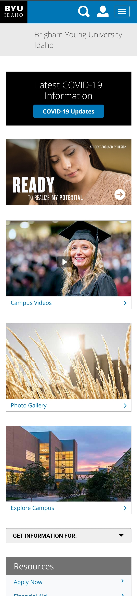
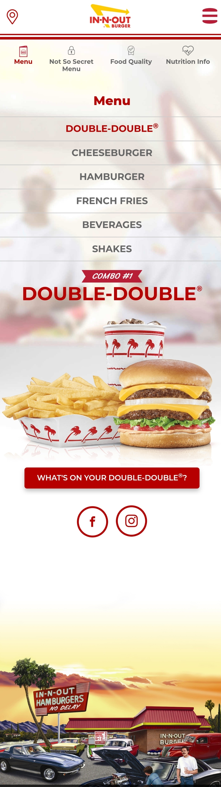

Whitespace
Quip

Quip is a streamlined electric toothbrush that marketing line is it has "all the features you need (and none of the gimmicks you don't). They use whitespace to emphasize their brand by employing ample padding on sections, paragraphs, and extra line-spacing, and employs spacious margins. The lack of superflous content on the site forces the eye to be directed straight to the product and it's message.
Repetition
Medium
Medium is a app that connects you with content that fits your interests. The wisely use repetition as a key element in their design to help viewers to move through the website as the icons and buttons direct the readers eyes through the page. They also include a repetition of icons that group interests together, with no explanation gived you, you quickly identify a pattern to follow.
Contrast
Duolingo
Duolingo is an app where you can learn a new language through a process they call "gamification". It's fun and easy. The designers utilized contrast in bold colors along with simple graphics to grab the viewers attention, emphasize their message and draw the viewer to the call-to-action button.